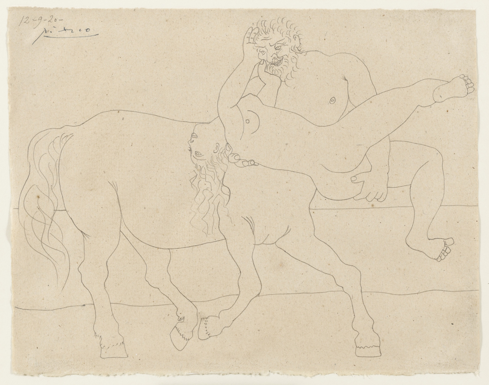

Lágrimas de Eros · Obra 89 de 121
El centauro Neso (Neso y Deyanira)
Pablo Picasso (1920)

Un centauro se lleva a una mujer; la firma está arriba a la izquierda. Es el mito de Neso y Deyanira, al que Picasso dedicó seis dibujos en Juan-les-Pins entre el 11 y el 22 de septiembre de 1920. Uno de ellos, a grafito sobre papel preparado, está en el Art Institute of Chicago y también pasó por la Galerie Louise Leiris. Pero no es el que reproduce Bataille: el de Chicago muestra otro momento de la escena y ya estaba en Nueva York en 1952.
Lo que hace que destaque
Un centauro se lleva a una mujer; la firma está arriba a la izquierda. Es el mito de Neso y Deyanira, al que Picasso dedicó seis dibujos en Juan-les-Pins entre el 11 y el 22 de septiembre de 1920. Uno de ellos, a grafito sobre papel preparado, está en el Art Institute of Chicago y también pasó por la Galerie Louise Leiris. Pero no es el que reproduce Bataille: el de Chicago muestra otro momento de la escena y ya estaba en Nueva York en 1952.
Contexto histórico
Solo se sabe que pertenece a la serie de 1920; no se ha localizado la hoja ni su sede. El MoMA tiene otro dibujo del tema (9 de septiembre de 1920), cuya ficha no se pudo abrir (403). La imagen de antes era otra obra, el Neso y Deyanira pintado en color. El dibujo de la lámina es, con toda probabilidad, el del MoMA (184.1952, fechado el 9 de septiembre de 1920; en la hoja se lee «12-9-20»): coinciden encuadre, firma y fecha, la cabeza y la mano alzada del centauro y la posición de cada casco, aunque la lámina, muy lavada, pierde las líneas finas. El MoMA lo adquirió en 1952, así que Bataille debió de usar una fotografía antigua de la Galerie Louise Leiris; el museo dice lápiz, no punta de plata.
Autoría y procedencia
Pablo Ruiz Picasso (1881-1973), pintor y escultor español, cofundador del cubismo y figura cumbre del arte contemporáneo universal.
En los libros
Las lágrimas de Eros, de Georges Bataille · Lámina de la p. 165
Ficha pendiente de contrastar con fuentes académicas.